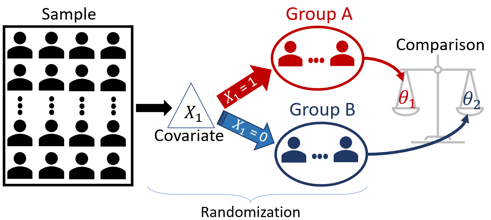
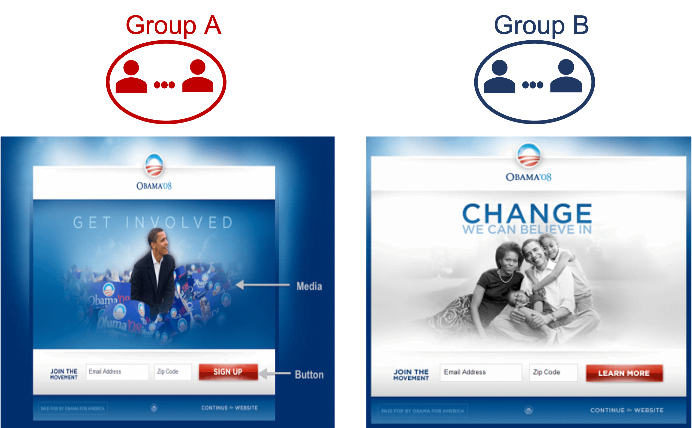

A/B Testing
In 2008, during Barack Obama’s groundbreaking presidential campaign, the team faced a critical challenge: how to maximize online donations. Their website featured a prominent red button inviting visitors to “Sign Up” for campaign emails. But was this design truly effective in driving subscriptions?
Source: Optimizely
To find out, the campaign embarked on an A/B testing journey. They created three alternative button designs – each with different text: “SIGN UP NOW,” “LEARN MORE,” and “JOIN US NOW.” Additionally, they explored five media options to replace the original photo: two alternative images and three videos. In total, they evaluated a staggering 24 website designs. The metric of interest? The subscription rate—the number of people who subscribed divided by the total number of visitors.
The results were astonishing. The best-performing design achieved a subscription rate over 40% higher than the original website. This seemingly small improvement translated into an estimated $60 million in additional donations and 288,000 extra volunteers. A/B testing had unlocked the potential to optimize their website and drive meaningful impact. You can learn more about it here.
But how do we compare websites?
The response variable
The first step is to understand the purpose of the website. This is a fundamental step because it guides the creation of useful metrics of success. Defining the main purpose of a website can be a challenging task. For example, in their case:
-
Do they want the website to attract more subscribers?
-
Do they want a high proportion of visitors to become donors?
-
Do they want to increase the size of donations per visitor?
What is a good metric to measure how effective the website is? Such a metric will be the response variable of the study. Although the campaign wanted to increase the total amount of donations, this was not the website’s purpose. The purpose of the website was to attract subscribers. For this reason, they used the subscription rate, i.e., the number of people that subscribed divided by the number of people that visited the website. If the website’s purpose is not very well defined, you might (and probably will) come up with misleading metrics of how effective your website is.
The covariates
Next, pinpoint the elements that can be optimized. In the Obama campaign’s case, they focused on media (images and videos) and the call-to-action button. However, other factors—such as background color—could also play a role. The goal is to find the winning combination of covariates that yields the highest subscriber rate.
Randomization
To avoid bias, each visitor saw a randomly chosen website design. This is a key step to be able to conclude that the reason for the increase in the subscription was the website’s design, and not a hidden factor that is not even being considered, lurking variable. The idea is that randomization will “average out” all these hidden differences between the visitors, and the only difference between the groups would be the website seen.
A/B Testing
A/B testing, often associated with website optimization, extends far beyond the digital realm. It’s a powerful tool used to compare two or more treatments or interventions, whether in clinical trials, marketing campaigns, or product development. Let’s explore how A/B testing works and its key distinctions.
At its core, A/B testing involves comparing two populations (Group A and Group B – hence A/B) to assess their performance regarding a specific variable of interest (the response variable). Here are some real-world scenarios:
A new vaccine has been developed for cancer. The drug company wants to check the efficacy of the vaccine. The company randomly split 50,000 volunteers into two groups, where 25,000 will receive the vaccine (Group A) and 25,000 will receive the placebo (Group B). They measure if the individuals develop cancer in the next ten years.
Response variable (\(Y\)): whether the individuals develop cancer;
Covariate (\(X\)): whether the individuals receives the vaccine or the placebo (two-levels);
Parameters of interest: \(p_1\) and \(p_2\), the proportions of individuals who develop cancer in Group A and Group B, respectively;
Research question: is the vaccine effective? In other words, is \(p_1 < p_2\)?
A phone company wants to reduce the number of complaints against its customer services. They are considering removing the navigation menu from the support service and using support staff instead. Naturally, this will be an expensive move, so they first want to test it to see if it would be effective. They trained a small team and randomly directed the clients to the navigation menu or human support. Then, they monitor whether the clients will open a complaint at the Canadian Radio-television and Telecommunications Commission (CRTC).
Response variable (\(Y\)): whether the individual opens a complaint;
Covariate (\(X\)): whether the individual is directed to the navigation menu or the support staff (two-levels);
Parameters of interest: \(p_1\) and \(p_2\), the proportion of clients that open a complaint at CRTC in Group A and Group B, respectively;
Research question: is the support staff better? In other words, is \(p_1 < p_2\)?
An e-commerce company wants to compare two website designs with respect to sales in dollars. For the following \(N\) clients, the design each client will see will be selected at random.
Response variable (\(Y\)): the amount of dollars spent;
Covariate (\(X\)): two website designs (two-levels);
Parameters of interest: \(\mu_1\) and \(\mu_2\), the average amount of dollars spent by the clients in each website design;
Research question: Is one of the designs better?
Although the name A/B testing suggests only two groups, we may encounter scenarios where more than two groups need to be analyzed. For instance, in the Obama Campaign problem, we have:
Response variable: the subscription rate;
Covariates:
- Button Design: four options;
- Media used: six options;
Total groups: 24 (combining button design and media)
In general, the structure of A/B Testing consists of:
a response variable, \(Y\);
one or more covariates that split the population into groups;
randomization, individuals are randomly assigned to the groups to avoid bias; and
statistical comparison of the groups’ parameter of interest (remember that all we have is a sample, so we need to account for the sampling variability.)

In A/B testing, our main objective is to compare two or more groups and determine whether any observed differences are statistically significant or merely due to chance (Item 4 above). Statistical hypothesis testing provides a rigorous framework for making these assessments. However, unlike the hypothesis testing problems we have seen, in A/B testing, there’s usually a critical caveat (or constraint): data are analyzed as they come. In other words, we don’t wait for the entire sample data to arrive before testing the hypothesis.
There is often a significant opportunity cost or even ethical reasons for us to want to speed up the study. For example, in Obama’s campaign, it is much better to implement the best website design for all users accessing the website than to keep presenting sub-optimal designs to a high percentage of users. Similarly, in the vaccine study, being able to quickly decide whether a vaccine works can save numerous lives.
Therefore, while A/B Testing also uses the traditional hypothesis testing methods you’ve learned to compare the groups, it is highly specialized in dynamic real-world applications. The constraints of these applications set A/B Testing methodologies apart from traditional hypothesis testing in the following ways:
Traditional Hypothesis Testing
- Sample size: Fixed – determined before the experiment begins and remains unchanged.
- Testing Framework: Static – set in advance, including the significance level and decision rules.
A/B Test
- Sample size: Flexible – data is monitored as they come.
- Testing Framework: Dynamic – decisions are made as the experiment goes for a more iterative process.
Unfortunately, peeking at the data before the full sample arrives has grave consequences. If not controlled properly, it drastically increases the rate of false positives (Type I Error). However, since businesses want to stop the experiment as soon as possible to avoid large opportunity costs, we must learn how to deal with these problems.
Before we investigate the implications of data peeking, let us review the basic concepts of hypothesis testing.
Review of Hypothesis Testing
In a classical hypothesis test, we generally use \(H_0\) as the status quo hypothesis (i.e., the hypothesis of no change, no difference), where \(H_1\) represents the anticipated change. It is not allowed for both hypotheses to be simultaneously false or simultaneously true; one, and only one, of the two hypotheses must be true.
The general procedure for hypothesis testing is always the same:
Define the hypotheses: \(H_0\) and \(H_1\);
Specify the desired significance level.
Define a test statistic, \(T\), appropriate to test the hypothesis.
. Study the distribution of the test statistic as if \(H_0\) were true. This distribution is called the null distribution.
Check the actual value of the test statistic using the data you collected.
Contrast the value of the test statistic with the null distribution by calculating the p-value.
If the p-value is smaller than the significance level, reject \(H_0\); otherwise, do not reject \(H_0\).
When estimating or testing hypotheses, the parameter of interest affects which statistic we will use. For example, when testing the mean, we want to use the sample mean \(\bar{X}\); when testing the difference in proportion, we want to use the difference in sample proportions, \(\hat{p}_1 - \hat{p}_2\), and so on.
Naturally, the way these statistics behave is different, i.e., the sampling distributions (and null models) of these statistics are different. We have explored two main approaches to approximate the null model (for hypothesis testing) of certain statistics: (1) the Central Limit Theorem (CLT); and (2) Simulation-Based Approaches. Here, we will focus on methods based on the CLT.
Comparing two means
Suppose you want to test the difference between two independent populations’ means. The scenarios to be considered:
\(H_0: \mu_A - \mu_B = d_0\) vs \(H_1: \mu_A - \mu_B \neq d_0\)
\(H_0: \mu_A - \mu_B = d_0\) vs \(H_1: \mu_A - \mu_B > d_0\)
\(H_0: \mu_A - \mu_B = d_0\) vs \(H_1: \mu_A - \mu_B < d_0\)
To conduct this hypothesis test, we take two independent samples, one from each population. By independent samples, we mean that the individuals are selected independently from each population.
Suppose Group A has \(n_A\) elements drawn at random from Population A, and Group B has \(n_B\) elements drawn at random from Population B. Let’s use \(x\) to refer to Group A and \(y\) to refer to Group B. For large sample sizes, the test statistic given by \[ T = \frac{\bar{x}-\bar{y} - d_0}{\sqrt{\frac{s_A^2}{n_A} - \frac{s_B^2}{n_B}} } \] follows a \(t\)-distribution with approximately \(\nu\) degrees of freedom under \(H_0\), where \[ \nu = \frac{ \left(\frac{s_A^2}{n_A}+\frac{s_B^2}{n_B}\right)^2 } { \frac{s_A^4}{n_A^2(n_A-1)}+\frac{s_2^4}{n_B^2(n_B-1)} }. \]
In other words, the null model of the test statistic above is \(t_\nu\). Of course, we will never calculate this weird formula by hand! Our computers can do this for us.
Suppose Obama’s campaign wanted to test which of two websites, Website A or Website B, results in a larger amount of donations. The next 60 users who visit the campaign’s website will access one of the websites chosen at random until 30 users have seen one of the designs. We have collected (actually simulated!) this data for you and stored it in the sample_money_donated object. Run the code cell below to take a look.
Next, to test \(H_0: \mu_A - \mu_B = d_0\) vs \(H_1: \mu_A - \mu_B \neq d_0\), we can use the t.test function in R.
Comparing two proportions
Obama’s campaign wanted the website to increase the number of subscribers, so they used the subscription rate. In this case, the variable of interest, “whether a visitor subscribes”, is not numerical and is dichotomic: “yes” or “no.” Consequently, we would want to compare the proportions of visitors who subscribe using Website A and Website B.
To test for the equality of proportions between two groups, i.e., \(H_0: p_A - p_B = 0\) vs \(H_1: p_A - p_B \neq 0\), we can use the following test statistics: \[ Z = \frac{\hat{p}_A-\hat{p}_B}{\sqrt{\hat{p}(1-\hat{p})\left(\frac{1}{n_A}+\frac{1}{n_B}\right)}}, \]
where \(\hat{p}=\frac{n_A\hat{p}_A+n_B\hat{p}_B}{n_A+n_B}\) is the overall proportion. For large sample sizes, the null model of the \(Z\) statistic is the Standard Normal distribution, \(N(0,1)\). Again, we will not do this manually, as we can easily calculate using the computer.
Suppose Obama’s campaign wanted to test which of two websites, Website A or Website B, results in a higher rate of subscribers. The next 60 users who visit the campaign’s website will access one of the websites chosen at random until 30 users have seen one of the designs. We have collected this data for you and stored it in the sample_subscriber object. Run the code cell below to take a look.
Next, run infer::prop_test in R to test the hypothesis.
Therefore, at \(5\%\) significance level, we have enough evidence suggesting that the proportion donations of the websites A and B are different.
When conducting hypothesis testing, what are the effects that sample size has on:
-
Probability of Type I Error
-
Probability of Type II Error
-
Power of the test
Solution.
- Probability of Type I Error
- None. Remember that the probability of Type I Error is the significance level, which is specified by us before the test is conducted.
- Probability of Type II Error
- The Probability of Type II Error decreases as the sample size increases. The reason is that both the null model and the sampling distribution of the test statistic will become narrower, hence reducing their overlap.
- Power of the test
- The power of the test is just one minus the probability of Type II Error. Since the probability of Type II Error decreases as the sample size increases, the power of the test increases as the sample size increases.
When conducting multiple hypothesis testing, what happens to the family-wise errors?
Solution. Since you need to make the right decision multiple times, and each time there is a chance that you make the wrong decision, when you consider whether all the decisions you made are right, there is a much lower chance of that happening compared to each hypothesis testing individually.
Peeking and Early Stopping
Let’s set up a fictitious problem to investigate the consequences of online data monitoring (or peeking).
- Problem: Imagine that Obama’s campaign had two versions of a website and was trying to figure out which to use. They would conduct an A/B Test experiment.

- Randomization: Everyone who accesses the website will be randomly directed to one of the versions.
- Peeking: In order to adopt the best website version as quickly as possible and move on to optimizing other aspects of the campaign, they will check the interim data on every 50 accesses (25 in each group) up to a maximum of 500 people.
- Early Stopping: They will stop the experiment once the p-value is less than 0.05.
This seems a reasonable plan, and it will address the campaign’s constraint of not wanting to wait for 2000 people to access the website to conduct the hypothesis test.
Is this approach reliable, though?
In other words, if we end up rejecting \(H_0\), can we safely conclude that it was due to a difference in the websites’ performance instead of just a highly inflated false positive (Type I Error) rate?
To answer this question, we can use a strategy called A/A Testing, which ensures that both groups receive the same website version. This approach allows us to confirm the truthfulness of \(H_0\), and any rejection of \(H_0\) would constitute a false positive.
Again, since this is an A/A Test, Website A and Website B are, in fact, the same website version, so we should not reject \(H_0\).
Next, fill in the code below to test the hypothesis that the proportion of subscribers in both groups is the same.
Yay, we didn’t reject! That’s great! But this is just the first test since we are monitoring the data as they come. Let’s collect the next 50 visitors data.
As you can see, the p-value changed. We will monitor yet another batch of 50 visitors and another one until one of two things happens: (1) we reach 500 visitors; (2) the p-value crosses the threshold of 5%. This means that we won’t reject \(H_0\) only if we don’t reject it in all 10 interim tests (for each batch). Let’s see how our p-value behaves across all 10 batches of size 50.
Let’s plot the p-value path throught the online data monitoring.
As you can see, in this case, we would have stopped the experiment once the data from the 7th batch arrived, and we would have concluded that one of the groups had a superior version of the website, which is the wrong conclusion. However, note that we are interested in the false positive rate, not in the fact that this particular example yields the wrong decision.
To investigate the rate, we need to conduct this experiment multiple times and see if the rate of false positives is close to 5% (our specified significance level). Let’s do this experiment 200 times.
As you can see, following the prescribed methodology above would yield a false positive rate of 19%, roughly four times the nominal rate of 5%. The sequential hypothesis tests significantly inflate the type I error.
P-value correction
We have learned about p-value adjustments to control for Type I Error. Remember BH and Bonferroni’s corrections? These methods can be useful here as well. However, as it turns out, people have also investigated many new approaches for A/B testing as well.
Bonferroni Correction
Let’s use the p.adjust function to include Bonferroni’s correction.
Pocock’s boundaries
The problem with the Bonferroni method is that it is too conservative, frequently making it very hard to reject \(H_0\). Another alternative to Bonferroni developed in the context of sequential hypothesis testing is Pocock’s boundaries. You can obtain the Pocock’s boundaries using the gsDesign package.
As with Bonferroni’s correction, Pocock’s method provides the same critical value for all the interim tests, no matter the interim sample size. This requires us to specify a priori the number of interim analyses to be conducted without the opportunity to change/adjust this after the experiment started. However, Pocock’s method is less conservative than Bonferroni’s method.
Other methods are more flexible and account for the size of the interim sample, making it harder to reject the null hypothesis for smaller sample sizes than for larger sample sizes.